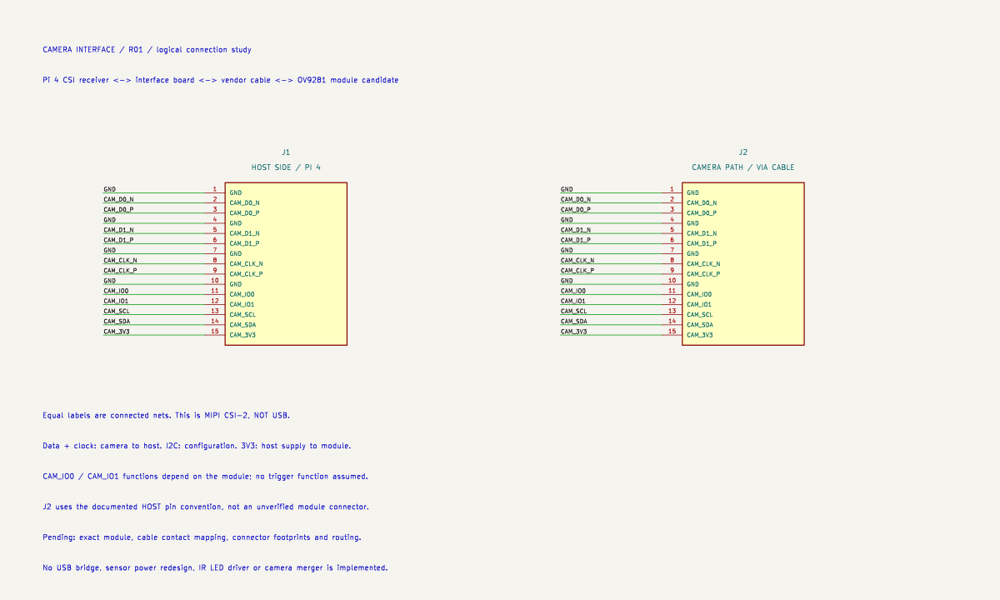
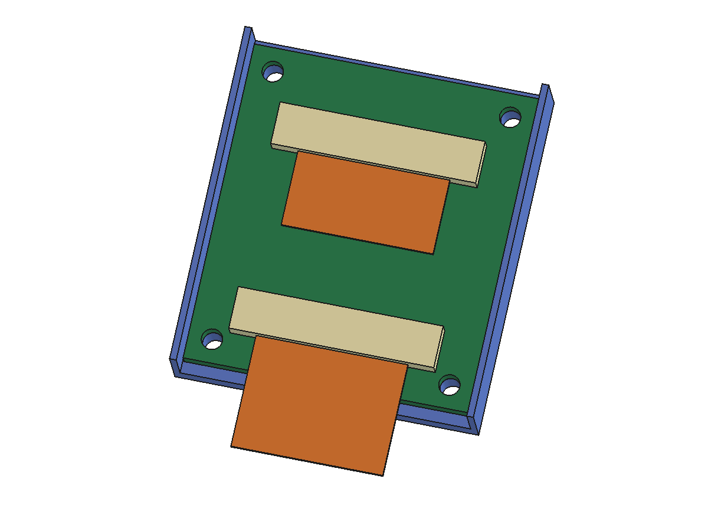

SKELLYCAD / CAMERA FOUNDATIONS
The digital walkthrough is built. Open the native files alongside this page to inspect the same design at each stage. Physical camera testing is tracked separately below.
These boxes track completed teaching artifacts. Earlier boxes mixed the lesson with hardware acceptance; purchasing, video capture and physical fit are separate unfinished product checks.
Lens + sensor module → MIPI cable → receiver → software image
Our bench reference is Arducam B0224, its supplied 150 mm 22-to-15-pin cable, and Raspberry Pi 4B. The vendor lists monochrome global shutter and NoIR operation. Its 40 × 40 mm board and listed focus from 30 cm make it a bench electronics reference; close-up eye optics need a later design. B0224 product specification.
| Signal group | Job |
|---|---|
| D0±, D1±, CLK± | Image data and clock travel from sensor module to receiver. |
| SCL, SDA | I2C lets software configure the camera. |
| 3V3, GND | Power and return path. |
| IO0, IO1 | Module-dependent control; no trigger function assumed. |
Assignments follow the Pi 15-pin host interface. The camera has a different 22-contact connector. Our adapter study stays on the host side of the vendor cable.

R02 assigns two Molex 200528-0150 footprints: 15 contacts at 1 mm pitch, bottom contact. The library supplies pad locations; the schematic supplies each pad's net. This is a real connector footprint used as a layout teaching candidate, not a verified drop-in replacement for the Pi socket. Molex series table.
Symbol → footprint → track: the symbol describes a connection, the footprint locates its physical pad, and the track is the copper joining pads. The ground plane provides a continuous copper reference under these routes. A via connects copper layers.
All routes are 20 mm long. Equal length alone does not establish correct high-speed routing: trace spacing, dielectric thickness, return paths and cable transitions still need design constraints. The 0.25 mm trace width is a teaching choice, not an impedance calculation.
Checked: zero ERC violations; zero DRC violations, unconnected items or schematic-parity issues under the current rules. Independent checks verify all 30 mapped pins and 15 routed connections. Not checked: cable contact mapping, controlled impedance or working MIPI video. This coupon is labelled NOT FOR FAB.

The board is 30 × 34 mm with nominal thickness 1.6 mm. KiCad's board-only STEP omits copper and has a 1.51 mm body. The holder aligns with the four 2.2 mm mounting holes and leaves 0.3 mm at the sides. All solids validate; board/tray and envelope/tray intersection volumes are zero. These numerical checks do not prove printed fit, screw access or cable bend behavior.
The editable assembly is camera-interface/mechanical/r02/camera-interface-assembly.FCStd. KiCad remains the authority for pads, traces and board outline; regenerate STEP when that board changes. FreeCAD owns the surrounding support geometry. No automatic bidirectional sync is assumed.
Gerber files describe layers; the drill file describes holes; STEP carries mechanical geometry. All three have been exported as examples. They are a demonstration package, not an approved fabrication order.
Heads A / B / C → supported receiver inputs → shared processing / buffering → chosen host link
Our product direction keeps small sensor heads near the eyes and moves shared electronics away from them. A passive Y cable does not create a multi-stream receiver. The later receiver must support the selected sensors, their configuration and simultaneous streams. Synchronization requires its own timing design.
· ·
Calculated for 1280 × 800: heads × pixels × frames/second × bits/pixel. Image payload only; excludes protocol overhead, blanking, transport packing and compression. This is not a supported-mode promise. The vendor lists 143 fps for full-resolution RAW8 and 114 fps for RAW10.
A USB bridge is an active receiver/transport design. A four-pin JST connector only carries the chosen signals; it cannot convert MIPI into USB. Sensor choice, optics, transport and packaging remain separate decisions that must work together.
Verify the exact module revision and cable continuity; bring up stock video; record supported modes and measured timing; design impedance against a chosen stackup; validate close-focus optics and printed fit. None of these is represented as completed.
On the configured Pi, rpicam-hello --list-cameras reports available modes. Official camera software guide.